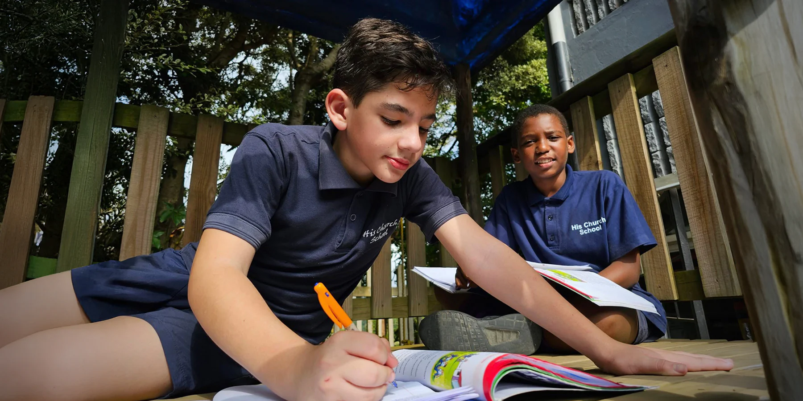

Academic

CAPS Curriculum
Academic Curriculum
At His Church School we follow the CAPS curriculum from Grade 1 through to Grade 12.
Assessments are mostly developed internally, except for the external examinations that are set and managed by SACAI (South African Comprehensive Assessment Institute). SACAI also sets and manages the NSC exams for the Grade 12 NSC exit exam. All NSC exams are monitored, moderated, and accredited by both SACAI and Umalusi.
His Church School is an accredited examination centre authorised to run NSC examinations for both our own learners and external candidates.
His Church School is accredited by Umalusi, Council for Quality Assurance in General and Further Education and Training, under accreditation number 19 SCH01 00763.Umalusi Accreditation
Grades 10 – 12
FET Subject Choices
During the Grade 9 academic year, learners prepare for the FET phase by selecting a balanced subject package for Grades 10 to 12. The combinations below show the compulsory majors and grouped elective options available at His Church School.
Compulsory Majors
Choice Majors
Select one from each column below
Subject Change Policy
Learners may make a maximum of two subject changes in Grade 10 and 11, but only one subject change may be made in Grade 12, on condition it is made before the end of the Grade 11 academic year. Cut-off dates apply and all changes require motivation from the school, parents, and learner. Only once SACAI has condoned the change may the learner commence studies in the new subject(s). Additional costs will be charged to the parents' account.
Future Pathways
Career Guidance
His Church School is committed to helping every learner discover their God-given purpose, equipping them with the knowledge, direction, and confidence to pursue a meaningful future. Our Career Guidance programme supports both learners and families through subject selection, tertiary planning, and career exploration, helping learners understand how their academic choices shape future opportunities.
In Grade 9, learners and their parents attend a dedicated meeting focused on FET subject packages, career pathways, and the requirements for university, college, or vocational training. Throughout this journey, our staff walk alongside each learner, helping them set goals, recognise their strengths, and step confidently into the future with purpose and faith.
Grade 12
Exit Exam & NSC
NSC Exit Examination
The National Senior Certificate (NSC) is the exit qualification for Grade 12 learners. At His Church School, NSC examinations are set and managed by SACAI and are accredited by Umalusi. Learners who achieve the NSC are eligible for university, college, and workplace entry.
SACAI Examination Centre
His Church School is an accredited SACAI examination centre, authorised to run NSC examinations for both our own learners and external candidates. External candidates who wish to write their NSC exams at our centre are welcome to contact us for registration information.
NSC Achievement Levels
The NSC uses a 7-point rating scale: Level 7 (80‑100%) Outstanding, Level 6 (70‑79%) Meritorious, Level 5 (60‑69%) Substantial, Level 4 (50‑59%) Adequate, Level 3 (40‑49%) Moderate, Level 2 (30‑39%) Elementary, Level 1 (0‑29%) Not Achieved.
University Entrance
To qualify for a Bachelor's pass, learners must achieve at least 40% in the language of learning and teaching, 50% in four designated subjects, and 30% in two other subjects. Our academic programme is designed to prepare learners to meet and exceed these requirements.
Quality Assurance
Accreditation
Umalusi
Council for Quality Assurance
His Church School is accredited by Umalusi, the Council for Quality Assurance in General and Further Education and Training.
Accreditation No. 19 SCH01 00763
SACAI
South African Comprehensive Assessment Institute
His Church School is an authorised SACAI examination centre, running NSC examinations for own and external candidates.
NSC Examinations: Own & External Candidates